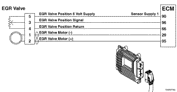

Código de Falha 2351
|
| CÓDIGO | RAZÃO | EFEITO |
| Código de Falha: 2351 PID: S146 SPN: 2791 FMI: 4 LÂMPADA: Âmbar SRT: |
Circuito de Controle da Válvula EGR - Voltagem Abaixo da Normal ou com Voltagem Baixa. Detectada voltagem baixa no circuito do motor da válvula EGR. |
Possível perda de potência. Alimentação removida do motor da válvula EGR. |
|
 ISF2.8 CM2220 E - Circuito do Sensor de Posição da Válvula EGR
|
O módulo eletrônico de controle (ECM) controla a válvula EGR, abrindo-a e fechando-a com base nas várias condições de operação. A válvula EGR é aberta e fechada por um motor de CC que recebe voltagem do ECM nos circuitos (+) e (-) de sinal do motor da válvula EGR. Para abrir a válvula, o motor recebe voltagem no circuito (+) de sinal do motor da válvula EGR. Para fechar a válvula, o motor recebe voltagem no circuito (-) de sinal do motor da válvula EGR.
A válvula EGR está localizada no lado de escape do motor e é acoplada ao arrefecedor de EGR, o qual é montado no coletor de escape.
Este diagnóstico é executado continuamente quando a chave de ignição está na posição ON e quando o motor está funcionando.
O módulo eletrônico de controle (ECM) detecta um curto-circuito com o massa nos circuitos de alimentação do motor da EGR.
O ECM monitora a voltagem do circuito e registra um código de falha se o nível de voltagem indicar um curto com o massa. Esta falha é sempre ajustada como inativa quando a chave de ignição é ligada. Se houver falha deste circuito, o código de falha não será ajustado como ativo até que a válvula tenha sido atuada. Por essas razões, este diagrama de diagnóstico de falhas deve ser utilizado para códigos de falha ativos e inativos.
As possíveis causas desta falha são um curto com o massa dos terminais de saída (+) ou (-) do motor da válvula EGR no chicote, no motor da válvula EGR ou no ECM.
NOTA: Não aplique 12 VCC ao sensor de posição da válvula EGR, nem permita um curto entre os fios do motor da válvula EGR e o sensor de posição da válvula EGR. O sensor de posição da válvula EGR tem uma tensão nominal de 5 VCC e poderá ser danificado.
Consulte o diagnóstico do Código de Falha 2351.